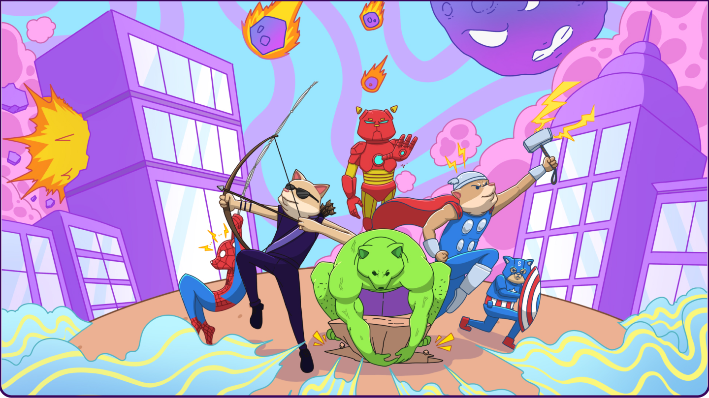

The idea behind the DOGENGERS heroes is rooted in the concept of powerful guardians who embody the virtues of loyalty, courage, and justice, just like legendary canine heroes in the real world. These heroes aren't just ordinary dogs; they are symbolic figures who take on larger-than-life roles to protect both people and the financial well-being of society. They stand as protectors of balance, ensuring that the scales of good and evil remain equal in a world that often tips towards chaos.
Guided by the universal balance of good and evil, DOGENGERS are the guardians of fairness. They fight against greed, inequality and corruption, ensuring that power is balanced and justice is served. In a world where darkness often overshadows the light, DOGENGERS rise as protectors, using their strength to bring harmony and peace. These dog heroes are like modern day legends - each with their unique abilities and unbreakable spirit, united by their mission to defend the vulnerable and stand against injustice.
In essence, the DOGENGERS are not just heroes of the financial world but guardians of universal balance, ensuring that goodness, justice, and opportunity prevail. By investing in and supporting the DOGENGERS, you're not just gaining financial assets—you’re joining a cause that strives for a better, more equitable world.